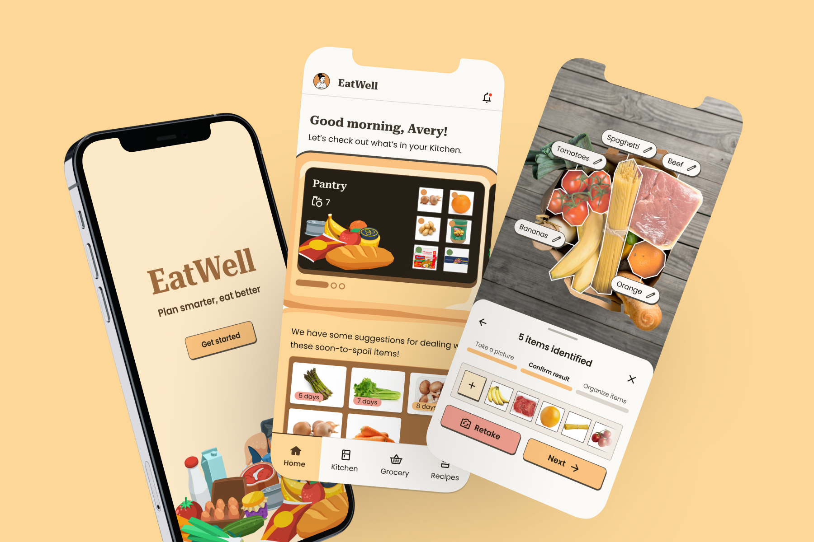
Designing a grocery management tool to reduce stress in meal activities.
Overview
It can be difficult for students to keep track of their groceries and turn their ingredients and leftovers into enjoyable meals amidst busy schedules. From research to design and testing, I explored college students' experience around meals and diets and developed EatWell, a digital tool to minimize obstacles to having healthy meals regularly. With EatWell, users easily manage their kitchen, keep track of estimated spoilage, plan grocery trips, and find recipes suitable for their dietary preferences, cooking ability, and available resources.
Role
Product Designer
Tools
Figma, Sketchbook
Timeline
Research & Ideation: Sep – Dec 2024
Design & Testing: Jan – Apr 2025
Problem space
Young adult postsecondary students often eat unhealthily and irregularly due to limited time, energy, budget, and cooking skills.
Young adults have higher rates of irregularity in their routine because they're in a transitional period where they're handling new environments, dynamics, and tasks. Coupled with the increasing workload, this leads to poor and delayed sleep and irregular meals. Under the stress of time and busy schedules, many students tend to skip meals or eat unhealthily to make time.
Cooking takes effort
Grocery shopping, ingredients prep, cooking, doing the dishes, tracking leftovers, etc., are activities that many students aren't motivated to do.
Limited time & budget
Postsecondary students often have limited budgets, and their class and/or work schedules cut into their meal times.
Lack of cooking skills
Many young adult students are living on their own and making their own meals for the first time.
Meet EatWell
EatWell brings grocery planning, managing ingredients and leftovers, and cooking into 1 platform, to...
Reduce mental workload
EatWell keeps track of expiry dates and estimated spoilage, helping students reduce food waste and alerting them when their groceries are running low.
Provide flexibility
EatWell finds groceries and recipes that fit many students' busy schedules, tight budgets, limited facilities, and dietary preferences.
Build confidence
EatWell helps students who live on their own for the first time familiarize themselves with grocery shopping and cooking independently.
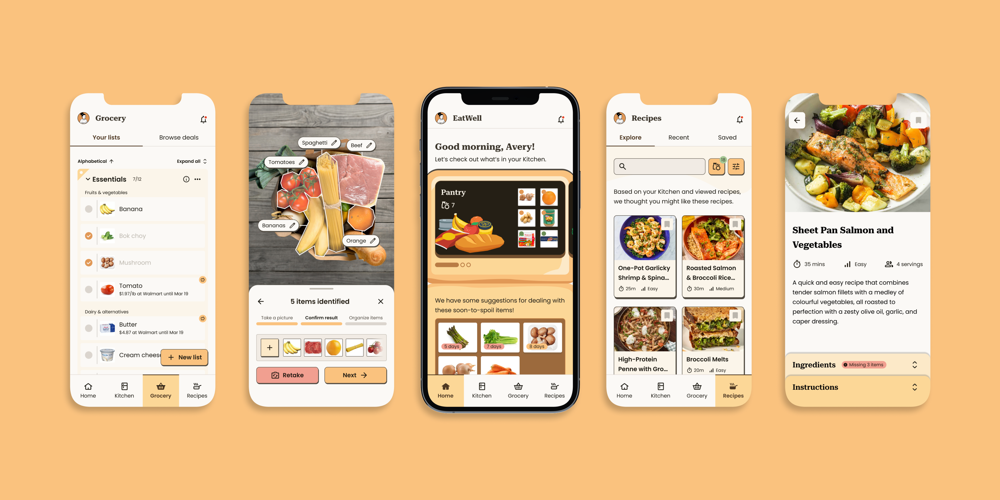
Research
Findings from online survey reveal that lack of nutrition knowledge isn't why many postsecondary students eat unhealthily, but rather the lack of time and high stress levels.
I wanted to assess how often nutrition is factored into meal decisions and whether lack of understanding is a barrier. While survey results didn't discount lack of nutrition knowledge as a barrier, they identified time, cost, stress, and availability of resources as the more common and impactful barriers to healthy eating.
84%
frequently consider the cost when buying food, drinks, and groceries.
56%
often factor in the time available, while the remaining occasionally consider it.
68%
often go for the convenient option.
Making healthy and enjoyable meals requires time and skills that many students don't have and efforts they're not motivated to make.
Conversations with college students confirmed that they generally know how to eat healthily but struggle to do it with limited time and skills. The majority are too busy to pay attention to the nutritional value of what they're eating, while the few who actively monitor their diet are either working out or navigating serious health issues.
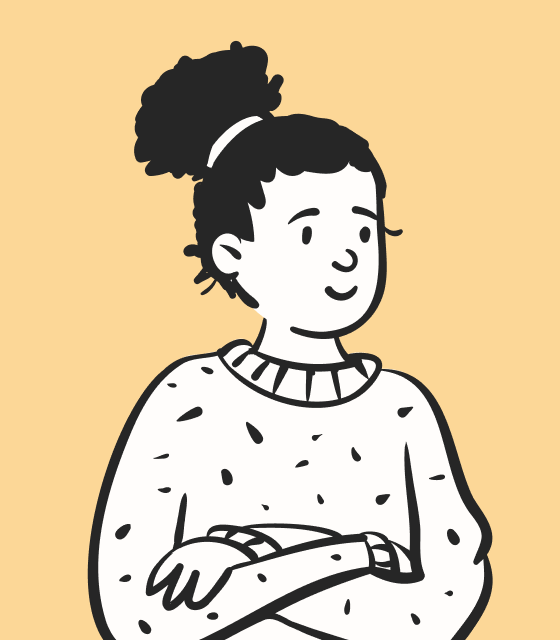
Has good habits but limited by time and budget, doesn't want to put in effort when busy.
"When I don't have time, I just want to survive."
Lacks time and skills to make enjoyable meals, relies on fast food and frozen homemade meals.
“Time and motivation are very big challenges, also stress, mainly because of school.”
Struggles to use up fresh groceries on their own, stress eats or forgets to eat when pressed for time.
"I just have to let go of the excuses and actually start eating healthy."
Despite numerous existing apps, their cost, complexity, and lack of visibility prevent users from finding ones that suit their situations.
Simpler apps like Yuka and Out of Milk are more economical for students and less mentally taxing, but are lesser known. More complex nutrition coaches and diet apps like MyFitnessPal or Healthify often put useful features behind a paywall and revolve around calorie trackers and streak systems that don't fit into students' busy lifestyles and stressful schedules.
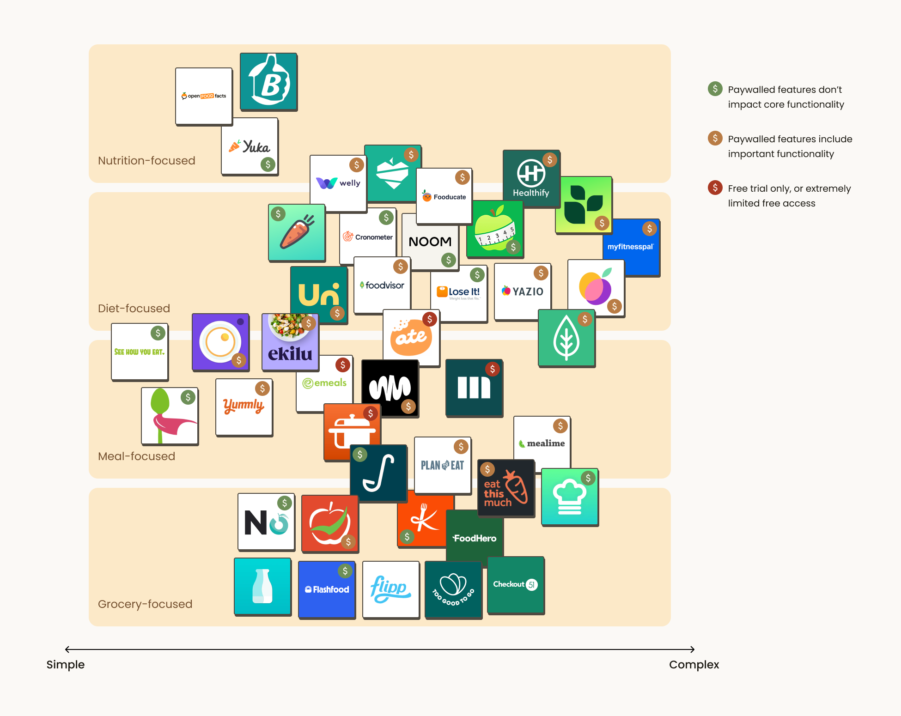
Ideation
With potential solution ideas, I conducted 3 rounds of concept testing to narrow down a desired concept or set of features.
Participants were more enthusiastic toward practical tools that they haven't encountered and generally valued convenience and affordability. Notably, they would use the AI image analysis if the information is accurate and they can trust it. By the final round of testing, no concept was especially more impactful or favourable, so I mixed and matched desired features for the final concept.
I narrowed down the focus to increasing the convenience and affordability when buying and managing groceries.
This will be accomplished primarily by allowing users to track their leftovers and groceries at home, and providing cooking suggestions based on their time, abilities, available ingredients and facilities, and dietary preferences.
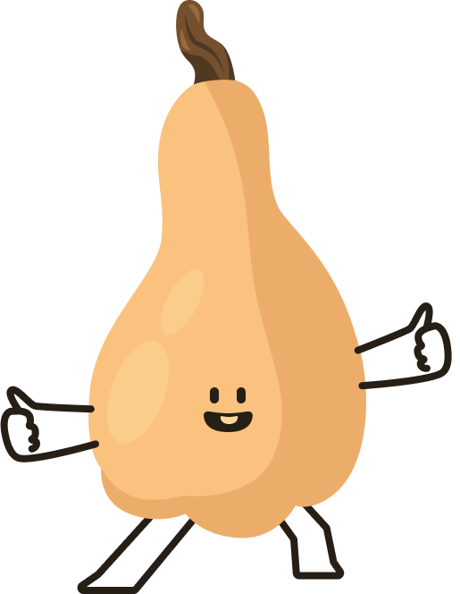
Stage 1 (MVP)
- Pantry manager to keep track of groceries and leftovers available at home
- Find affordable groceries or grocery deals nearby based on budget
- Recommend recipes based on available ingredients, time, difficulty, cooking equipment, etc.
- Filter results based on dietary preferences
Stage 2
- Engaging and informative cooking instructions
- Find affordable food and beverage (grocery and non-grocery) options nearby
- View explanations of nutrition information on food/beverage items before buying
- Connection to online grocery order
- Meal journal
Stage 3
- Get nutrition analysis by taking pictures of meals
- Collaborative database of recipes from family and friends
- Connection to healthcare professionals (dieticians, nutritionists, etc.)
- Reward system for positive activities
- Meal/diet plan
Design
Taking all the desired features and user flows, I mapped out the necessary screens for the MVP.
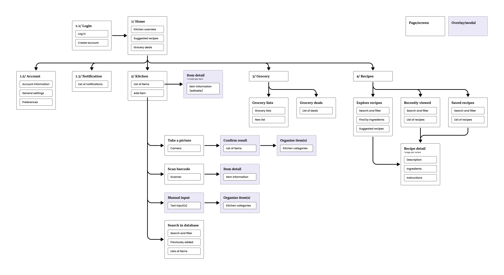
I started with low-fi screens to capture the user flows of the app and start conducting user tests.
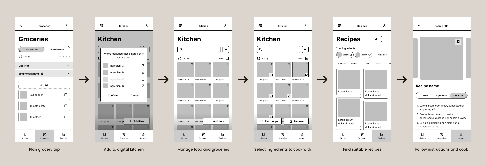
Through multiple rounds of iteration and testing, I refined the user flow and interfaces, focusing on these improvements:
Opportunity to correct AI
Showing how individual items are recognized allows users to identify any mistake made by AI and make corrections.
Consistency and standards
While I wanted the app to have its own look, the UI still follows existing conventions.
Reducing workload
The user flows were adjusted to ensure users don't encounter repeated steps.
Visibility of system status
A progress tracker is added to show the user upcoming and completed steps.
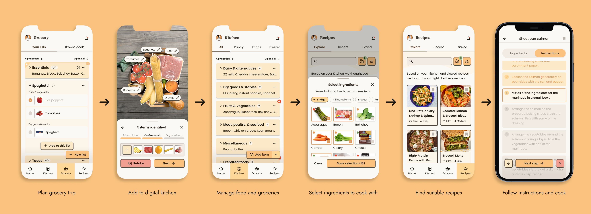
I developed a design system using the results from visual preference testing to ensure consistency across screens.
I conducted visual preference testing with three style tiles compiled based on research into visual marketing strategies. Test participants preferred warm colours, a welcoming and organic aesthetic, a sense of structure, and the homey feeling of serif fonts.
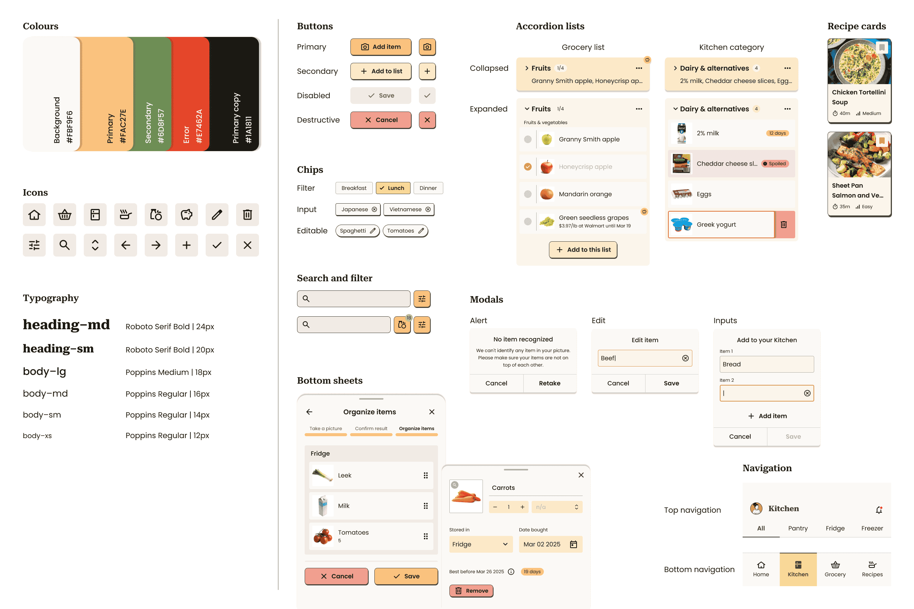
The refined user flows and UI components together brought the prototype to life.
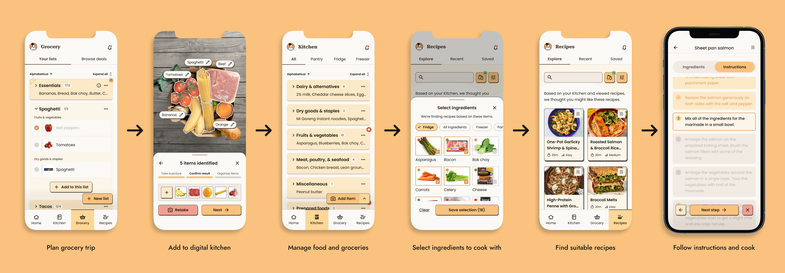
The MVP is finished, but EatWell can be refined and improved, especially in a more creative and engaging direction.
Testing and prototype
Previous user tests occurred quickly to accommodate the time constraint. I want to conduct a proper usability test with a more functional and robust Protopie prototype to continue refining the app and improving it for users.
Visual direction and engagement
EatWell needs a proper visual identity. Even if it's just a wordmark, I want EatWell to have a playful and welcoming logo, along with a defined brand guideline. A companion character could make the experience more engaging and enjoyable, and aligns with the original playful direction that was excluded due to time constraints.
Incorporate nutrition information
Going back to the initial goal of improving understanding of nutrition, I want to explore effective learning methods and incorporate nutrition information in a stress-free and non-intrusive manner. The categorization of items by food groups opens up possibilities to include general nutrition information.
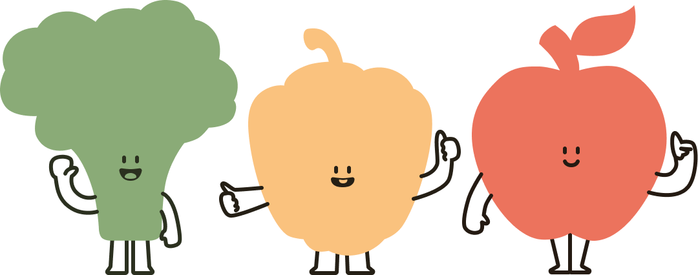
Reflection
01
In the search for an original concept, I overlooked simpler improvements to the current experience for meals, groceries, and cooking apps. I'd like to return to the initial goal of improving nutritional understanding and explore creative and innovative learning methods.
02
This was the first time I was in charge of a large-ish design project end-to-end and managed different moving parts. As much as I would have done certain things differently, it was valuable to see where my strengths and limitations lie.
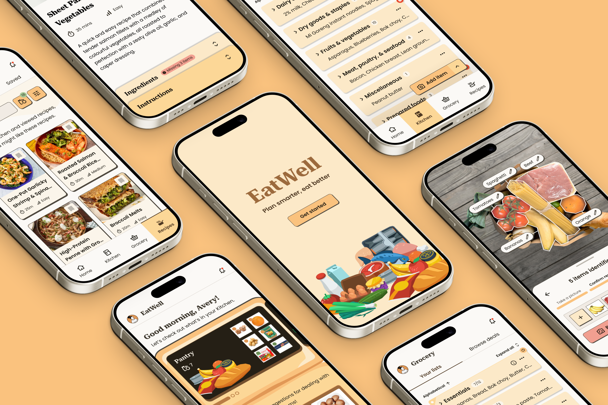